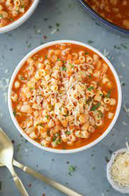

Pasta Fagioli

Pasta Fagioli
This is a pasta dish that will feed a family of 4!
The dish has about a 10 minute prep time and cooks in
about 30 minutes!
Ingredients
- 1 tablespoon olive oil
- 1 carrot, diced
- 1 stalk celery, diced
- 1 thin slice onion, diced
- 1/2 teaspoon chopped garlic
- 4 (8 ounce) cans tomato sauce
- 1 (14 ounce) can chicken broth
- 1 tablespoon dried parsley
- 1/2 tablespoon dried basil leaves
- freshly ground black pepper to taste
- 1 1/2 cups ditalini pasta
- 1 (15 ounce) can cannellini beans, drained and rinsed
Steps
- Heat olive oil in a saucepan over medium heat. Add carrot, celery, and onion; cook and stir until soft. Add garlic and sauté briefly. Stir in tomato sauce, chicken broth, parsley, basil, and pepper; simmer for 20 minutes.
- Bring a large pot of lightly salted water to a boil. Add ditalini pasta and cook for 8 minutes or until al dente; drain.
- Add beans and cooked pasta to soup; simmer until heated through, 1 or 2 minutes.